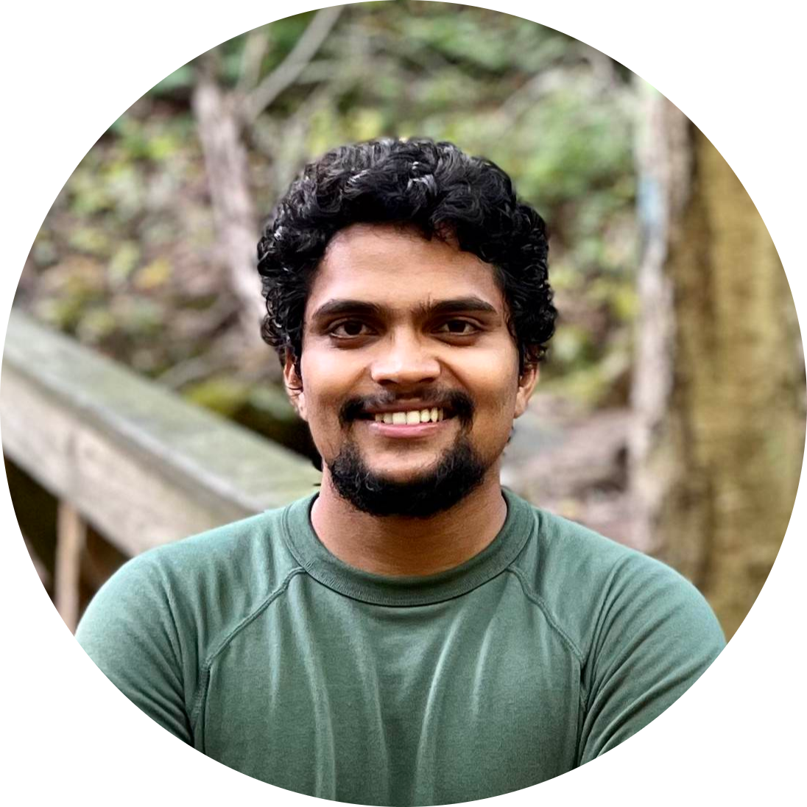

Hello, I am Harsha 👋
I am Deep Learning R&D intern at Playform designing neural architectures to classify paintings at the brush stroke level.
I am a Masters student studying Computer Science at Rutgers University, New Brunswick. I am also researching under the mentorship of Prof. Dimitris N. Metaxas, solving a unique problem of mapping a real image to it's latent representation in GAN latent space for MS-Thesis
I got my bachelor (advisor prof. S. Senthil Kumar) degree in Electrical & Electronics Engineering from the National Institute of Technology, Trichy, India. After my bachelor, I had the opportunity to work at Citigroup (supervised by Kausik Ramanthan) as a Software Engineer for their Global Consumer Banking vertical.
Career Goals: Deep Learning Engineer (Computer Vision and NLP/Speech Synthesis)
If I am not coding or debugging software, I jump into my second life playing acoustic versions of favorite songs for youtube channel 😀
Ball to Goal, a Reinforcement Learning Environment solved via DQN Designed a RL env in Unity3D with ML-Agents and trained an agent (Ball) to reach the Goalpost through DQN to find optimal policy - github
Finding Super Influencers of Media with LSTM/BERT Encoder & Clustering methods Our project selected as Top 6 for UBS Pitch Competition Fall'20 where we orchestrated a Deep Learning model that can find a super influencer of the media from scratch - github
Hybrid Movie Recommender system enchanced by sentiment analysis on Twitter tweets Hybrid recommendation engine with sentiment analysis on tweets, content-based, collaborative filtering on movie ratings from TMDb using PySpark - github
Generate Styled Images through Neural Style Transfer Implemented Neural style transfer,an optimization technique that styles content in one image, using the artistic features of the style reference image - github
Rutgers Machine Learning Lab (RUML), Fall 2020. Mentored by Prof.Sungjin Ahn. My work is in the domain of Reinforcement Learning, Generative Models, World Models.
Jul 2016 - Dec 2019, Citigroup, Software Engineering and Leadership
sriharsha.musunuri@rutgers.edu